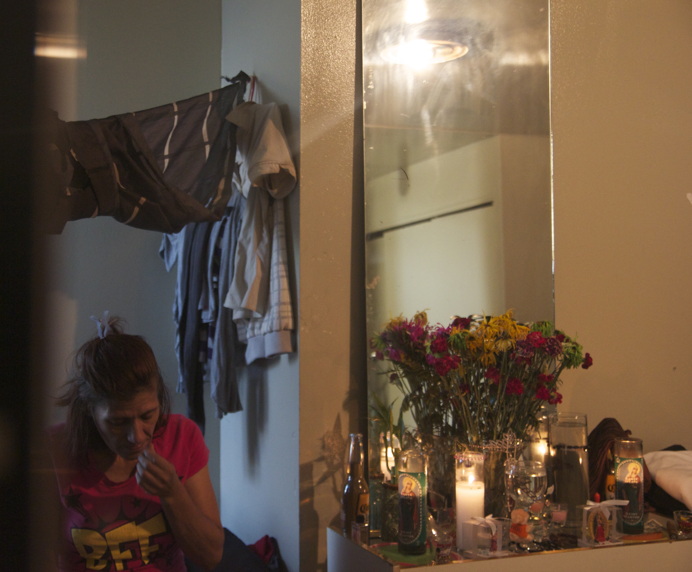

Heroin at Hunts Point
The Southern boulevard ends and Hunts Points begins. A few delis line up the bare, cold streets serving burgers to young Hispanic men with heavy metal jewelry and black caps. Big cars with rolled up thick black glass windows line the streets. A man is walking briskly, singing aloud and pounding his fist in the air, frothing every time he says, "fuck" before disappearing into the corner.
A woman crosses the street, puts her hand in her denim pockets and takes out a $10 bill. A man in a white hoodie is waiting for her across the street. She stops and says hello and slides the $10 bill into the man's hands. He takes out a small glass vial in a white packet and hands it to her before walking away. No nervous looking over the shoulder, just a casual amble for a specific purpose. Heroin was bought and sold yet again at Hunts Point.
The front door opens to a cramped bedroom. A man is hiding behind, ready to attack or flee. There have been police raids before. Another man is sitting on a dusty, brown chair at a corner with his glazed eyes staring at a police car chase scene on an old television set, grainy and off-colored. There are three mattresses sprawled at different corners.Frankie comes out from the kitchen holding a broom. He limps his way across the room, making a thud on the wooden floor with his heavy boots and starts cleaning. "Get your shit out," he tells the man behind the door. Relaxed now, the man wearing a bright red t-shirt and black pants picks his shoes from the middle of the room and throws them under the bed. Frankie sweeps the same spot over and over again. He drops the broom and sits on a chair and starts pounding on a pair of bongos.
In one corner of the room, an arm lifts from inside a black curtain around a bed next to the window. Brenda Vega, a middle-aged woman wearing a bright pink t-shirt and jeans comes out, sniffing and stumbling through the room to the kitchen. "What's with all this racket," she says."I can't sleep. I have to work tonight." Frankie continues to play the bongos. The man sitting in the corner is still staring at the television, transfixed. There are four people in a cramped, one room apartment yet the only sound that could be heard are the loud beatings of the bongos and the slow breathing of the men in the room.
The kitchen is bright yellow, clean and looks almost untouched. Brenda opens the drawer and takes a needle out and hands another one to the man wearing the bright red t-shirt. Both pull in the heroin, strap a plastic wire around their arms and try to find their veins and jab the needle in.
Small drops of blood bubble out of her raw and exposed gash, trickling down her arms like a steady stream. She washes it away and goes back to her bed. Half an hour later, she gets a call. Brenda goes to the bathroom, cleans herself and puts on fresh clothes.
A man is waiting for her downstairs in a car. $20 dollars for sex, $ 10 for a blowjob. Brenda's target for the night is at least a hundred dollars . She needs the money for heroin. It's ten dollars a pop.
Growing up at Hunts Point, Brenda never thought she would ever join her friends on the streets. She got married and had four children. It took her 33 years and desperation for a shot of heroin to get inside a car with a man. "When I saw myself that I didn't have no money, there was no drugs I could sell, there are no jobs. I was like let's go make some fast money with a friend of mine and we went man! That's how I did it. I jumped in the car with a man and that's how it happened," she says.
"I have been using since 18, I started with marijuana, then with cocaine and then heroin and then I started shooting up. It's a high school thing. Trying to be a part of," she says.

Brenda Vega is 46 years old, she was born and raised at the Points. Her father was a drug peddler, she said growing up she had everything she ever needed. "I had a good childhood. I can't complain. When I started growing up that I started being messed up. Maybe it was the environment," she says, "When I first did my injection I didn't feel it. I was like what is this, then I started doing again and then I started feeling it and I liked it, and then I started doing it more. The rush, the rush."
Brenda leans against the kitchen counter and pulls out the syringe. Drops of blood spurt out and falls on the wall as she turns towards the sink to wash it off. Three tiny drops of blood splashed across a bright yellow wall. There are small faint brown spots of dry blood lining the wall like freckles.
"I need help. I am just tired of being tired- I am using drugs since I was 18 I am 46 years old, I want my kids back in my life. I am tired of using drugs. I need help," she says with her eyes glistening with tears before walking back to her corner in the room.
Hunts Point is located in South Bronx in New York City. It has one of the largest food distribution facilities in the world. The area is also known for its high crime rate, violence and drug problems. The area's police precinct consistently records the highest violent crime rate per capita in New York City. More than half its population lives below the poverty line. But it wasn't always like this.
Drug related deaths in Hunts Point and Mott Haven is the highest in New York.
Deaths due to heroin overdose in the area is also the highest in the city.
Prostitution has been feeding addiction in Hunts Point for decades. Lack of access to health care and inadequate social services haven't done much to alleviate the problem.